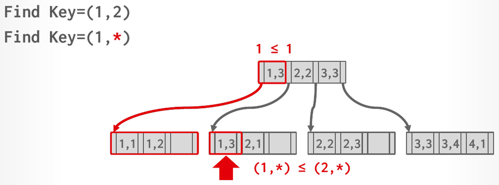
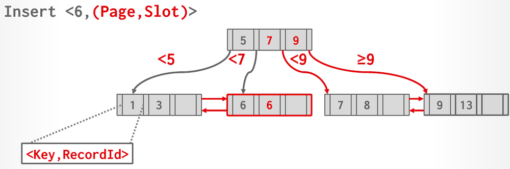

Database Internals in Go · Unit 3 · Lesson 4
B+Trees: Delete, Duplicate Keys, and Clustered Indexes
Trace B+tree deletes that borrow from a sibling, merge nodes and shrink the tree, under both the lecture's rule and the rule HW3's Q3(c) answer uses, and explain how a B+tree serves composite keys, duplicate keys and clustered and non-clustered scans.
An insert can overfill a node, and a split fixes that. A delete can leave a node less than half full, and the fix runs the other way: take a key from a sibling, or merge two nodes into one. This lesson covers the delete side of Lecture #08 and then the questions a real index raises: keys made of several columns, keys that repeat, and how the order of the leaves relates to the order of the table.
Lesson 2: an extendible hash table has global depth 3, and a bucket with local depth 1 overflows. What happens?
Unit 1, Lesson 2: an update makes a tuple too large to fit in its slotted page. What happens, and what does that mean for its record ID?
Unit 2, Lesson 1: the buffer pool is a write-back cache. What does that mean when the BPM picks a dirty page as its eviction victim?
Deleting: the lecture's rule
Slide 32 gives the delete algorithm. Find the leaf L that holds the key and remove the entry. If L is still at least half full, you're done. Otherwise L has underflowed, and the DBMS repairs it in this order:
- Try to redistribute: borrow an entry from a sibling, meaning an adjacent node with the same parent as L. The slide calls a sibling with an entry to spare "rich".
- If no sibling can lend, merge L with a sibling into one node.
- If a merge happened, delete the parent's entry that pointed to L or to the sibling.
Borrowing changes which keys each of the two nodes holds, so the separator between them in the parent must change too; the slide stresses "Need to update parent node!". A merge removes an entry from the parent, which can make the parent underflow in turn. The repair then continues one level up, with the same choice between borrowing and merging. For an inner node, both moves go through the parent: a merge pulls the separator between the two nodes down into the merged node, and a borrow rotates a key through the parent. If the root ends up with a single child, that child becomes the new root, and the tree shrinks by one level. Like growth, shrinking happens only at the root, so the leaves all stay at the same depth.
The first example has leaves of at most 3 keys: a root [4, 9] over the leaves [1, 3], [5, 6] and [9, 12, 14]. Deleting 6 leaves [5] alone, which the slide treats as underflowed.

The next examples use nodes of up to 4 keys, starting from [13] / [5,9] [17,21] / [1,3] [5,7] [9,11] [13,15] [17,19,20] [21,23], written level by level as in the last lesson. Deleting 15 leaves [13] under-filled; it borrows 17 from the rich sibling [17, 19, 20], and the parent's separator 17 becomes 19. Deleting 19 next leaves [20] under-filled, and neither sibling ([13, 17] and [21, 23]) has a key to spare, so [20] merges with [21, 23]. The parent loses its separator 21 and is left as [19] with two children, which the slide also calls under-filled. Its sibling [5, 9] can't lend either, so the two inner nodes merge, pulling the root's 13 down between them, and the root disappears.

#08 B+Trees, "B+ tree deletion operations" (45:35), slides 32–40: the delete algorithm, borrowing from a rich sibling, and merges that shrink the tree.
The rule HW3's Q3(c) answer uses
HW3 asks students to follow the procedures from class and the textbook, but its official answer to Q3(c) doesn't borrow first. It is consistent with a different rule: when a node underflows, merge it with a sibling if the two fit in one node, and redistribute only if they don't. The two rules agree whenever no sibling can lend. They differ when a sibling could lend and a merge would also fit; then the lecture borrows and HW3's answer merges.
| Lecture #08, slide 32 | HW3 Q3(c) official answer | |
|---|---|---|
| First choice | Borrow from a sibling that has an entry to spare | Merge with a sibling if the two fit in one node |
| Second choice | Merge with a sibling | Borrow from a sibling |
| Result on Q3(c) | The tree keeps three levels | The tree shrinks to two levels |
Use the HW3 rule for the Q3(c) quiz question below, because its answer key assumes it, and the lecture's rule everywhere else. The Work it out section redoes Q3(c) under the lecture's rule, and the result isn't among HW3's options.
HW3 also counts underflow its own way. With order d = 4, a leaf underflows when it has fewer than ⌈(d−1)/2⌉ = 2 keys, and an internal node when it has fewer than ⌈d/2⌉ = 2 pointers. The lecture states its minimum as m/2 − 1 keys. When you trace a delete, write down which thresholds you are using before you start.
Deleting in Project 2
The Project 2 writeup leaves the choice to you. During deletion, two half-full pages can be merged, or keys can be redistributed to avoid merging, and its roadmap asks whether it is mandatory to merge when a leaf is less than half full and how to choose the sibling to merge with. The minimum size is your decision too (the last lesson's GetMinSize comment), and a delete that changes the root must update the root page ID in the header page, as an insert does.
Fall 2025 adds a twist: a tombstone buffer in each leaf. When a key is deleted, its entry stays in the leaf's arrays, and its index is appended to the leaf's buffer of up to k pending deletes. Only when the buffer already holds k entries is the oldest pending delete actually applied. The writeup calls this a simplified version of the Bε-tree from the lectures; the next lesson covers the idea behind it. Iterators must skip entries that have a tombstone, and splits, merges and redistributions must keep the tombstones and their order. These tombstones are unrelated to Lesson 1's hash-table tombstones, which mark a deleted entry's slot so that lookups keep probing past it. Unit 4 goes through the details when you build the btree/ package.
Composite keys
An index key can be built from several attributes. The slide's example sets the sort order and NULL handling per attribute:
CREATE INDEX my_idx ON xxx (a, b DESC, c NULLS FIRST);The keys sort by a first, then by b, then by c, so the DBMS can use the index when a query gives a prefix of the key. Slide 41 lists (a=1 AND b=2 AND c=3) and (a=1 AND b=2) as supported, and (b=2) and (c=3) as rarely supported. The notes add that the conditions must mostly be joined by AND; OR is generally not supported. A hash index is stricter: it needs every attribute of the search key, because it hashes the whole key.

A search that binds only a later attribute, such as Find (*, 1), gets no help from the order: keys with b = 1 can sit under any separator, so the DBMS has to probe every subtree.
#08 B+Trees, "Composite index utilization" (52:33), slides 41–42: composite keys, which predicates can use the index, and prefix and suffix searches.
Duplicate keys
Several tuples can share one key value. Slides 43–45 give two ways to store them:
- Append the record ID to the key, so the index stores <key, record ID> pairs. Record IDs are unique, so every key becomes unique, and the DBMS can still find tuples with a partial key: search for the key alone and scan its run of entries.
- Overflow leaf nodes let a full leaf spill duplicate keys into extra nodes chained below it. The slide calls this more complex to maintain and modify, and marks it "Don't Do This!".

Project 2 sidesteps the question: its B+tree supports only unique keys.
Clustered indexes and index scans
With a clustered index, the table itself is stored in the sort order of the primary key, as either heap or index-organized storage. Some DBMSs always use one, and add a hidden primary key to a table that has none; others can't use clustered indexes at all. To scan a table in key order through a clustered B+tree, the DBMS goes to the leftmost leaf and reads the tuples from every leaf in turn. Slide 47 says this is always better than sorting the data for each query.
A non-clustered index orders its leaves by key, but the tuples they point to are scattered over the table's pages. Fetching them in index order reads the same page again and again. The fix is to sort the work first:
![Text on the left: Retrieving tuples in the order they appear in a non-clustered index is inefficient due to redundant reads. A better approach is to find all the tuples that the query needs and then sort them based on their page ID. The DBMS retrieves each page once. On the right, a Scan Direction arrow runs over an index whose leaf entries point with many crossing arrows to table pages 101, 102, 103 and 104. Below, an unsorted list of page IDs in index order, such as 102, 103, 104, 104, 102, turns into a sorted list 101, 101, 102, 102, 102, and so on, with one marker per distinct page.](../assets/slides/L08-index-scan-page-sorting-p144.png)
#08 B+Trees, "Clustered indexes and scans" (1:04:05), slides 46–48: clustered indexes, clustered scans, and page sorting for non-clustered scans.
Work it out
-
What to think about
At each underflow, look for a sibling with the same parent that can give up an entry and stay at or above the minimum. Only merge when there is none. Which siblings does each underflowing node actually have?
The method
[70]'s only sibling, [140, 150], has exactly the minimum, so those two leaves merge. Their parent is left with one pointer; its sibling [20, 35] has three, so it can lend a child by rotating a key through the root. Deleting 20 leaves [30], whose only sibling under the same parent is [0, 10, 15], which can lend.
The result
After Delete 80:
[35] / [20] [70] / [0,10,15] [20,30] [35,45] [70,140,150]. After Delete 20:[35] / [15] [70] / [0,10] [15,30] [35,45] [70,140,150]. The tree keeps three levels, and this tree isn't one of HW3's four options. -
What to think about
The separators compare the first attribute first. Can any separator rule out a subtree when the first attribute is unknown?
The method
Every subtree may hold a key whose second attribute is 1, so check each leaf: [(1,1), (1,2)], [(1,3), (2,1)], [(2,2), (2,3)] and [(3,3), (3,4), (4,1)].
The result
All four leaves are read. The matches are (1,1), (2,1) and (4,1); the third leaf has none.
The homework behind these questions
The questions marked HW3 come from CMU's Homework #3: Question 3, with the original figures. Work each one out on paper first, then click the option you got. The quiz tells you at once whether it matches CMU's official answer, and explains why. To compare your working step by step, open the official solutions for Question 3.
Check your understanding
HW3 Q3(c): starting from Q3(b)'s result, [70] / [20,35] [140] / [0,10,15] [20,30] [35,45] [70,80] [140,150], delete 80* and then 20*. Use the rule HW3's official answer follows: an underflowing node merges with a sibling if the two fit in one node (at most 3 keys, or 4 pointers), and redistributes only otherwise. A leaf underflows below 2 keys, an internal node below 2 pointers. Which tree results?
Under the lecture's rule, with at least 2 keys per leaf, delete 15 from [13] / [5,9] [17,21] / [1,3] [5,7] [9,11] [13,15] [17,19,20] [21,23]. What happens?
There is a B+tree index on (a, b, c). Which predicate does Lecture #08 list as only rarely supported by it?
What does Lecture #08 recommend for duplicate keys in a B+tree, and why?
A query fetches many tuples through a non-clustered B+tree index. Following Lecture #08, how should the DBMS retrieve them?
Primary sources: CMU 15-445/645 Fall 2025 Lecture #08 slides 32–48 and notes (section 2: Deletion, Composite Index, Selection Conditions, Duplicate Keys); Homework #3 Question 3(c) and its official solution; the Project #2 writeup (Tasks #1–#3 and the Development Roadmap); BusTub src/include/storage/page/b_plus_tree_leaf_page.h at commit d49b823.